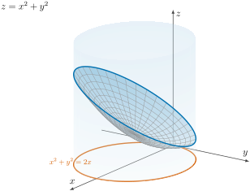

Evaluate \(\displaystyle\iint_R (3x + 4y^2)\,dA\text{,}\) where \(R\) is the region in the upper half plane bounded by the circles \(x^2 + y^2 = 1\) and \(x^2 + y^2 = 4\text{.}\)
Section 9 Double Integrals in Polar Form
In the previous session, we talked about a new coordinate system known as polar coordinates. Today, we will use polar coordinates to calculate double integrals. As you will see, this set of coordinates can sometimes simplify our calculations. In Cartesian coordinates, double integrals are of the form
\begin{equation*}
\iint_R f(x,y)\,dx\,dy = \iint_R f(x,y)\,dA.
\end{equation*}
Subsection 9.1 How Does a Double Integral Look in Polar Coordinates?
To answer this question, assume that our region of integration is
\begin{equation*}
R = \{(r,\theta) : a \le r \le b,\ \alpha \le \theta \le \beta\},
\end{equation*}
which is shown on the left in Figure 9.1. We divide this region into polar rectangles as shown on the right. Then, we calculate the area \(\Delta A_i\) of a typical polar rectangle
\begin{equation*}
R_{ij} = \{(r,\theta) : r_{i-1} \le r \le r_i,\
\theta_{j-1} \le \theta \le \theta_j\},
\end{equation*}
which, using the fact that the area of a sector of a circle with radius \(r\) and central angle \(\theta\) is \(\tfrac12 r^2\theta\text{,}\) gives us
\begin{align*}
\Delta A_i \amp= \tfrac12 r_i^2\,\Delta\theta
- \tfrac12 r_{i-1}^2\,\Delta\theta
= \tfrac12\left(r_i^2 - r_{i-1}^2\right)\Delta\theta\\
\amp= \tfrac12\left(r_i + r_{i-1}\right)\left(r_i - r_{i-1}\right)
\Delta\theta
= r_i^*\,\Delta r\,\Delta\theta,
\end{align*}
where \(\Delta\theta = \theta_j - \theta_{j-1}\text{,}\) \(i = 1,2,\dots,n\text{,}\) and \(j = 1,2,\dots,m\text{.}\) Here \(r_i^* = \tfrac12(r_i + r_{i-1})\) is the average radius of the polar rectangle. Therefore,
\begin{align*}
\iint_R f(x,y)\,dA
\amp= \lim_{n,m\to\infty}\sum_{i=1}^{n}\sum_{j=1}^{m}
f\!\left(r_i^*\cos\theta_j^*,\ r_i^*\sin\theta_j^*\right)
r_i^*\,\Delta r\,\Delta\theta\\
\amp= \iint_R f(r\cos\theta,\ r\sin\theta)\,r\,dr\,d\theta.
\end{align*}
Diagram Exploration Keyboard Controls
The subdivision of \(R\) into polar rectangles, and how the area of a polar rectangle behaves as the grid is refined, is animated in Figure 9.2.
Subsection 9.2 Integrating Over a Half Annulus
Example 9.3. Example I.
Solution.
The region
\begin{equation*}
R = \{(x,y) \mid y \ge 0,\ 1 \le x^2 + y^2 \le 4\}
\end{equation*}
is shown in Figure 9.4, and in polar coordinates we have
\begin{equation*}
R = \{(r,\theta) : 1 \le r \le 2,\ 0 \le \theta \le \pi\}.
\end{equation*}
\begin{align*}
\iint_R (3x + 4y^2)\,dA
\amp= \int_0^{\pi}\!\!\int_1^2
\left(3r\cos\theta + 4r^2\sin^2\theta\right) r\,dr\,d\theta\\
\amp= \int_0^{\pi}\!\!\int_1^2
\left(3r^2\cos\theta + 4r^3\sin^2\theta\right) dr\,d\theta\\
\amp= \int_0^{\pi}
\Big[r^3\cos\theta + r^4\sin^2\theta\Big]_{r=1}^{r=2}\,d\theta
= \int_0^{\pi}\left(7\cos\theta + 15\sin^2\theta\right)d\theta\\
\amp= \int_0^{\pi}\left[7\cos\theta
+ \tfrac{15}{2}\left(1 - \cos 2\theta\right)\right]d\theta\\
\amp= \left.\left(7\sin\theta + \frac{15\theta}{2}
- \frac{15}{4}\sin 2\theta\right)\right|_0^{\pi}
= \frac{15\pi}{2}.
\end{align*}
Diagram Exploration Keyboard Controls
Subsection 9.3 Area Enclosed by One Loop of a Rose
Example 9.5. Example II.
Use a double integral to find the area enclosed by one loop of the four-leaved rose \(r = \cos(2\theta)\text{,}\) graphed in Figure 9.6.
Solution.
\begin{equation*}
D = \left\{(r,\theta)\ \middle|\
-\pi/4 \le \theta \le \pi/4,\ 0 \le r \le \cos 2\theta\right\},
\end{equation*}
and hence we can evaluate its area as follows:
\begin{align*}
A(D) = \iint_D dA
\amp= \int_{-\pi/4}^{\pi/4}\!\!\int_0^{\cos 2\theta}
r\,dr\,d\theta
= \int_{-\pi/4}^{\pi/4}
\left[\tfrac12 r^2\right]_0^{\cos 2\theta} d\theta\\
\amp= \tfrac12\int_{-\pi/4}^{\pi/4}\cos^2 2\theta\,d\theta
= \tfrac14\int_{-\pi/4}^{\pi/4}\left(1 + \cos 4\theta\right)d\theta\\
\amp= \tfrac14\left[\theta
+ \tfrac14\sin 4\theta\right]_{-\pi/4}^{\pi/4}
= \frac{\pi}{8}.
\end{align*}
Diagram Exploration Keyboard Controls
Subsection 9.4 A Volume Computed in Polar Coordinates
Example 9.7. Example III.
Find the volume of the solid that lies under the paraboloid \(z = x^2 + y^2\text{,}\) above the \(xy\)-plane, and inside the cylinder \(x^2 + y^2 = 2x\text{.}\)
Solution.
We notice that the cylinder can be re-written as \((x-1)^2 + y^2 = 1\text{,}\) which is shown in Figure 9.8; the solid itself is shown in Figure 9.9. In polar coordinates, \(x^2 + y^2 = 2x\) becomes \(r^2 = 2r\cos\theta\text{,}\) that is, \(r = 2\cos\theta\text{,}\) so the base disk is
\begin{equation*}
D = \left\{(r,\theta)\ \middle|\
-\pi/2 \le \theta \le \pi/2,\ 0 \le r \le 2\cos\theta\right\}.
\end{equation*}
Therefore,
\begin{align*}
V = \iint_D \left(x^2 + y^2\right)dA
\amp= \int_{-\pi/2}^{\pi/2}\!\!\int_0^{2\cos\theta}
r^2\, r\,dr\,d\theta
= \int_{-\pi/2}^{\pi/2}
\left[\frac{r^4}{4}\right]_0^{2\cos\theta} d\theta\\
\amp= 4\int_{-\pi/2}^{\pi/2}\cos^4\theta\,d\theta
= 8\int_0^{\pi/2}\cos^4\theta\,d\theta
= 8\int_0^{\pi/2}\left(\frac{1+\cos 2\theta}{2}\right)^{2} d\theta\\
\amp= 2\int_0^{\pi/2}\left[1 + 2\cos 2\theta
+ \tfrac12\left(1 + \cos 4\theta\right)\right]d\theta\\
\amp= 2\left[\tfrac32\theta + \sin 2\theta
+ \tfrac18\sin 4\theta\right]_0^{\pi/2}
= 2\left(\frac{3}{2}\right)\left(\frac{\pi}{2}\right)
= \frac{3\pi}{2}.
\end{align*}
Diagram Exploration Keyboard Controls

Subsection 9.5 An Integral That Needs Polar Coordinates
Example 9.10. Example IV.
Calculate the double integral \(\displaystyle\iint_R e^{x^2+y^2}\,dx\,dy\text{,}\) where \(R\) is the unit disk centered at the origin.
Hint: Notice that you cannot solve this integral using Cartesian coordinates.
Solution.
In polar coordinates the unit disk is \(0 \le r \le 1\text{,}\) \(0 \le \theta \le 2\pi\text{,}\) and \(e^{x^2+y^2} = e^{r^2}\text{.}\) The extra factor of \(r\) in \(dA = r\,dr\,d\theta\) is exactly what makes the integral computable, via the substitution \(u = r^2\text{:}\)
\begin{align*}
\iint_R e^{x^2+y^2}\,dx\,dy
\amp= \int_0^{2\pi}\!\!\int_0^1 e^{r^2}\,r\,dr\,d\theta
= \int_0^{2\pi}\left[\tfrac12 e^{r^2}\right]_0^1 d\theta\\
\amp= \int_0^{2\pi}\tfrac12(e - 1)\,d\theta
= \pi(e-1).
\end{align*}